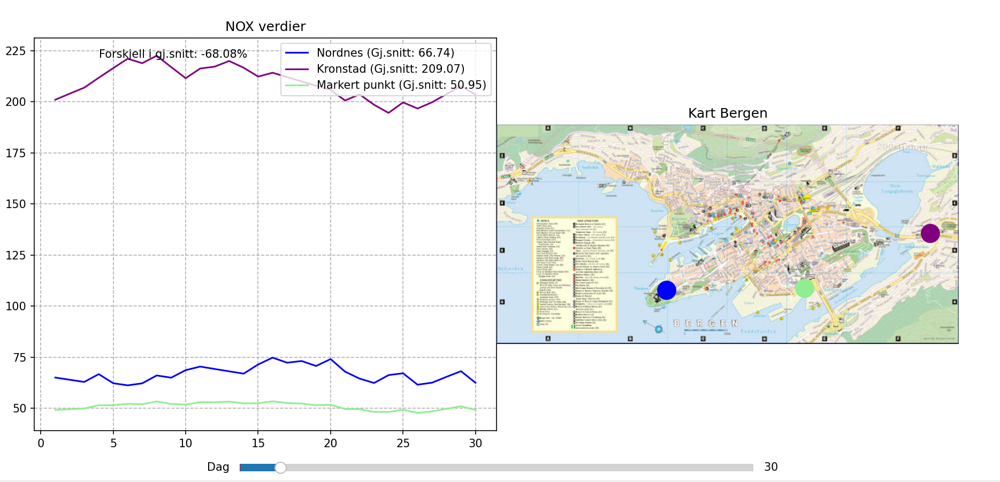
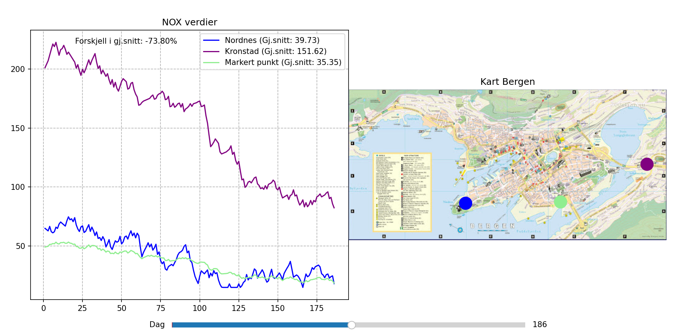

1. Når du laster inn programmet får du opp 2 forhåndsdefinerte punkter

2. Deretter velger du et punkt på kartet som er markert i grønt, og ser dag 1

3. Deretter kan du bruke slideren for å få oppdatert informasjon til angitt dato, her dag 119

4. Videre brukes slideren for å demonstrere, her dag 251

5. Det sjekkes også her at alt blir oppdatert for dag 303
